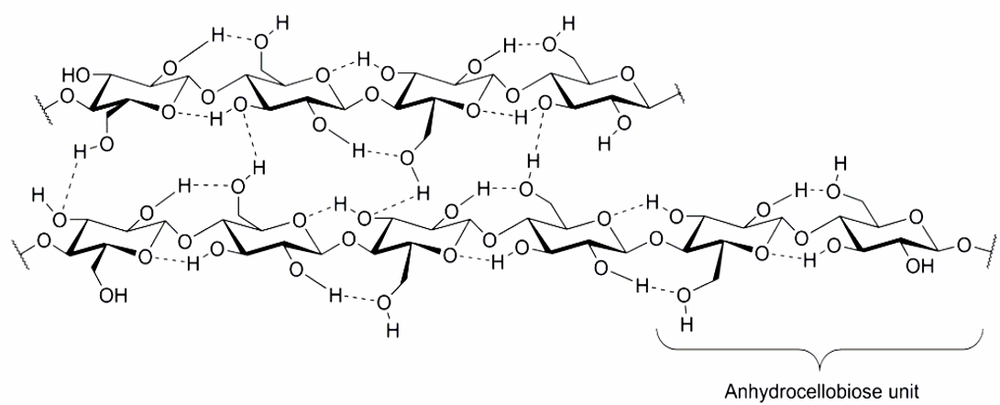
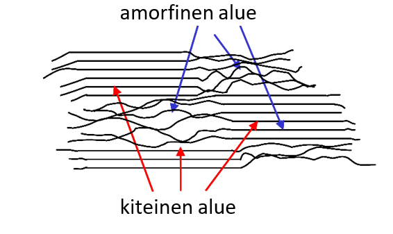

Puun yhdisteitä#
Puuraaka-aineesta suurin osa on kemialliselta luonteeltaan hiilihydraatteja. Näistä hiilihydraateista puunjalostuksessa pyritään keräämään talteen selluloosaa. Puussa on myös erilaisia ns. uuteaineita, joiden kemiallinen koostumus vaihtelee.
Puun hiilihydraatit#
Puut pystyvät tuottamaan hiilihydraatteja, lähinnä glukoosia, fotosynteesin avulla. Hiilidioksidista ja vedestä muodostuu auringon energian avulla lehtien ja neulasten viherhiukkasissa glukoosia. Muodostuva glukoosi kulkeutuu nilatiehyitä myöten jälsisolukkoon. Jälsisolukon soluissa glukoosista muodostuu selluloosaa, hemiselluloosaa tai ligniiniä, jotka sitten muuttuvat soluseinän rakenteiksi.
Selluloosa
Kotimaisten puulajien kuiva-aineesta noin 40 % on selluloosaa, joka sijaitsee pääasiassa soluseinien sekundääriseinämissä. Luonnonselluloosan polymeraatioasteen eli glukoosiyksiköiden määrän arvioidaan olevan yli 10 000, ja selluloosamolekyylin pituudeksi on mitattu yli 5 µm.
Koska selluloosalla on tiivis rakenne ja molekyylien välillä ja sisällä on useita vetysidoksia, selluloosa ei liukene helposti liuottimiin. Selluloosan liukoisuutta voidaan lisätä voimakkaalla emäksellä.
Selluloosan rakenne

Selluloosan molekyylirakenne määrää selluloosan kemiallisen luonteen lisäksi sen mekaaniset ja fysikaaliset ominaisuudet sekä sen kuitumaisen rakenteen. Selluloosalla on taipumus muodostaa alkeisfibrillejä, joissa joukko yhdensuuntaisesti asettuneita selluloosamolekyylejä on kiinteästi sitoutunut toisiinsa vetysidoksin. Alkeisfibrilli on selluloosakuidun pienin rakenneyksikkö. Yhden alkeisfibrillin halkaisija on noin 3.5 nm, ja se koostuu 40 samansuuntaisesta selluloosamolekyylistä.
Seuraava suurempi rakenneyksikkö on nauhamainen mikrofibrilli, joka koostuu 16 alkeisfibrillistä. Mikrofibrillissä selluloosamolekyylit muodostavat täysin järjestäytyneitä, kiteisiä alueita eli kristalliitteja, jotka vaihtelevat vähemmän järjestäytyneiden ja järjestäytymättömien eli amorfisten alueiden kanssa. Selvää rajaa kristalliittien ja järjestäytymättömien alueiden välillä ei ole.
Selluloosaketjut ulottuvat mikrofibrilleissä läpi lukuisten kiteisten ja amorfisten alueiden sitoen ne toisiinsa kovalenttisilla sidoksilla. Puhtaan selluloosan kristallipitoisuudeksi arvioidaan noin 45 %.

Kemialliset reaktiot tapahtuvat ensin selluloosan amorfisella alueella tai kiderakenteen pinnalla. Selluloosakuidun sisällä reaktiot tapahtuvat vasta, kun reagenssimolekyylit pääsevät selluloosakuitujen sisälle. Kiderakennetta voidaan hajottaa voimakkailla hapoilla.
Mikrofibrillien ajatellaan vielä liittyvän suuremmiksi kimpuiksi (4 kpl), joita sanotaan fibrilleiksi (makrofibrilleiksi). Soluseinämissä fibrillit sitoutuvat edelleen litteiksi nauhamaisiksi lamelleiksi, jotka orientoituvat kuidun (solun) seinämän eri kerroksissa tiettyihin kulmiin solun pituusakseliin nähden.
Selluloosalla on taipumus sitoa vettä itseensä. Vesimolekyylit sitoutuvat selluloosakuitujen järjestäytymättömien alueiden selluloosamolekyylien vapaisiin hydroksyyliryhmiin vetysidosten avulla. Tällöin selluloosakuidut (solut) turpoavat. Toisaalta jos vesi poistuu kuiduista, selluloosakuitujen väliin syntyy paljon vetysidoksia, jotka saavat aikaan kuivaan kuituverkkoon (paperiin) hyvän sidoslujuuden.
Selluloosan kemialliset reaktiot määräytyvät sen funktionaalisten ryhmien mukaan. Selluloosan funktionaalisia ryhmiä ovat glukoosiyksikön kolme hydroksyyliryhmää (-OH), sidokset glukoosiyksiköiden välillä sekä ketjun päässä olevat glukoosiyksiköt.
Selluloosa erotetaan puuaineksesta keittämällä kemikaalien avulla (sulfaattikeitto). Tällaisesta teknisesti eristetystä puhtaasta selluloosasta käytetään myös nimitystä sellu. Sellua käytetään paperin ja kartongin raaka-aineena sekä erilaisissa selluloosan johdoksissa.
Selluloosananomateriaaleilla on paljon potentiaalisia sovelluskohteita, papereissa ja kartongeissa sekä komposiiteissa, apuaineina maali-, elintarvike- ja lääketeollisuudessa. Selluloosananomateriaaleja voidaan käyttää myös korvaamaan muoveja.
Hemiselluloosat
Hemiselluloosat ovat erilaisista monosakkarideista koostuvia polymeerejä, joita esiintyy puiden soluseinissä yhdessä selluloosan sekä ligniinin kanssa. Rakenteeltaan hemiselluloosat ovat lineaarisia, mutta jossain määrin haaroittuneita molekyylejä ja paljon monimuotoisempia kuin selluloosa. Hemiselluloosia koostuu noin 200 monosakkaridista.
Hemiselluloosat jaetaan rakenteensa perusteella erilaisiin ryhmiin. Glukomannaani ja ksylaani ovat puussa esiintyvien hemiselluloosien päätyypit. Niiden pääkomponentit glukoosi, ksyloosi, mannoosi ja galaktoosi ovat heksoosiryhmän sokereita.
Hemiselluloosien perusrakenne on samankaltainen selluloosan rakenteen kanssa (ne rakentuvat monosakkarideista ja muodostavat pitkiä lineaarisia molekyylejä), ja näin ollen hemiselluloosat voivat kiinnittyä selluloosan pintaan. Puun solurakenteessa hemiselluloosa sijaitsee selluloosan muodostamien fibrillien seassa väliaineena. Pitoisuudet vaihtelevat soluseinämän rakenteellisten osien välillä.
Hemiselluloosat muodostavat ristisidoksia selluloosan ja kasvien soluseinän toisen pääkomponentin, ligniinin, välille, ja ne vaikuttavat siten soluseinän joustavuuteen. Hemiselluloosat säätelevät ligniinin ohella myös puun soluseinien vesipitoisuutta. Soluseinän ja kuitujen (solujen) elastisuus riippuu paljolti hemiselluloosien kyvystä sitoa vettä.
Monet hemiselluloosat ovat rakenteeltaan haaroittuneita tai niillä on ainakin muutamia sivuryhmiä. Epäsäännöllisestä ketjurakenteestaan johtuen hemiselluloosat ovat amorfisia ja helposti hydrolysoitavissa. Ne saadaan siis melko helposti poistettua puuaineksesta.
Ligniini
Ligniini on kasvien soluseinän pääkomponentti selluloosan ohella. Se on vahvoja sidoksia muodostava polyfenoli, ja sen päätehtävä on lujittaa puukuituja ja sitoa kuidut toisiinsa.
Ligniini on maapallon toiseksi yleisin biopolymeeri, sillä puussa on selluloosan jälkeen eniten ligniiniä, noin 20–30 prosenttia kuivapainosta. Ligniinin vuoksi puun väri on yleensä kellertävä.
Ligniini on hyvin haaroittunut polymeeri ja siten täysin amorfinen. Sitä ei voida kiteyttää. Ligniinillä ei ole selkeää kemiallista rakennetta, mutta sille voidaan määrittää keskimääräinen kemiallinen kaava. Ligniinin rakenne myös vaihtelee riippuen puulajista.
Paperiteollisuudessa ligniini on puussa haitallinen komponentti, koska se sitoo puun selluloosan ja hemiselluloosan toisiinsa. Ligniiniä voidaan kuitenkin hyödyntää erilaisissa teollisuuden tarpeissa lähtöaineena.
Ligniinin rakenne
Uuteaineet#
Puuaineksen uuteaineet syntyvät fotosynteesissä muodostuneesta glukoosista monien välivaiheiden kautta. Uuteaineiden määritelmä ei ole yksikäsitteinen. Uuteaineista käytetään usein yleisnimitystä pihka. Pihkan koostumus ja määrä vaihtelevat paljon samassakin puussa.
Uuteaineita voidaan luokitella seuraavasti:
Terpeenit, terpenoidit ja sterolit (ainoastaan havupuissa): suurimolekyylisiä tyydyttymättömiä hiilivetyjä, joissakin on mukana myös OH-ryhmiä tai ketoniryhmiä (kaksoissidoksella kiinnittynyt happi)
Rasvat ja vahat: pitkäketjuisista karboksyylihapoista ja glyserolista (alkoholi, jossa on kolme hiiltä ja kolme OH-ryhmää) muodostuneista estereitä
Fenoliset yhdisteet: yhdisteitä, joissa bentseenirenkaaseen on suoraan kiinnittynyt OH-ryhmä
Hiilihydraatit
Epäorgaaniset yhdisteet
Havupuiden pihka (patologinen pihka) sijaitsee pihkarakkuloissa ja pihkatiehyissä hartsihappoina ja monoterpeeneinä, sekä vararavintona (rasvoina) ydinsäteiden tylppysoluissa. Havupuun vanhetessa muodostuu sydänpuuta, jolloin puu alkaa kehittää pihkaa, joka tunkeutuu sydänpuun soluihin.
Lehtipuiden pihka (fysiologinen pihka) sijaitsee ydinsäteiden tylppysoluissa, eikä sisällä hartsihappoja eikä monoterpeenejä. Lehtipuiden pihka koostuu rasvoista, vahoista ja steroleista.
Uuteaineet ovat ongelmallisia sellunvalmistuksessa, mutta jos ne saadaan eroteltua puuaineksesta talteen, niistä voidaan valmistaa monia hyödyllisiä tuotteita.